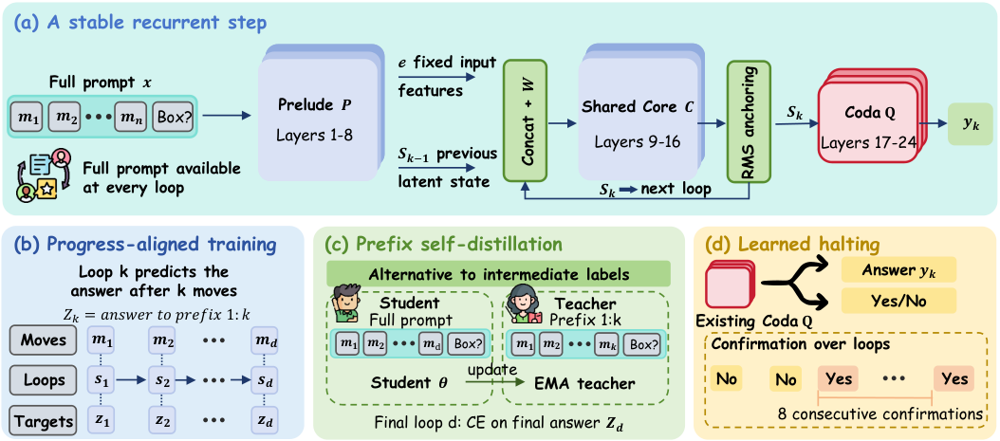

Teaching a long dance routine: instead of only checking the final pose, you check that on count k the dancer is in position k, and you stop them from taking ever bigger steps. With both habits, they can follow a routine far longer than any they practiced.
긴 안무를 가르친다고 해 보자. 마지막 자세만 확인하는 대신 k번째 박자에 k번째 자리에 있는지를 확인하고, 보폭이 점점 커지지 않게 잡아 준다. 이 두 습관이 있으면 연습한 것보다 훨씬 긴 안무도 따라간다.
How it works: give every loop a job작동 방식은 루프마다 할 일을 정해 주기
A pretrained 24-layer model is cut into a prelude, a shared 8-layer core that loops, and a coda that can read an answer after any loop. No intermediate tokens are generated.
사전학습된 24층 모델을 앞부분, 반복해서 도는 8층 공유 코어, 어느 루프에서든 답을 읽을 수 있는 뒷부분으로 나눈다. 중간 토큰은 하나도 생성하지 않는다.

- Retrofit the loop.루프로 개조.Layers 9–16 become one weight-tied core that sees the fixed input features again each time; an adapter starts as identity, so one loop equals the original model.9~16층을 가중치를 공유하는 코어 하나로 만들고, 매번 고정된 입력 특징을 다시 넣는다. 어댑터는 항등에서 시작해 루프 한 번이면 원래 모델과 같다.
- Align and anchor.정렬과 고정.Loop k gets cross-entropy against the state after k moves, and each token's state is rescaled to its first-loop RMS norm.k번째 루프는 k번 이동 뒤의 상태와 교차 엔트로피로 맞추고, 각 토큰의 상태는 첫 루프의 RMS 노름으로 다시 맞춘다.
- Stop on its own.스스로 멈추기.The coda also says Yes or No to "finished", and the answer is read at the first loop where 6 of the next 8 say Yes. Without labels, an EMA teacher run on prefixes supplies the targets.뒷부분은 "끝났는가"에 Yes나 No도 답하고, 이후 8루프 중 6번이 Yes인 첫 루프에서 답을 읽는다. 레이블이 없으면 접두부에 돌린 EMA 교사가 목표를 대신 만든다.
Key point: either piece alone collapses핵심은 둘 중 하나만으로는 무너진다는 것
At 16× the training depth, every recipe that drops progress targets or norm anchoring falls to near chance; only the pair stays near 100%. Earlier papers' supervision schemes are among the failures.
학습 깊이의 16배에서는 진행 정렬 목표나 노름 고정 중 하나라도 빼면 모두 우연에 가까운 수준으로 떨어지고, 둘을 함께 쓸 때만 100% 가까이 유지된다. 기존 논문들의 감독 방식도 실패한 쪽에 들어 있다.
Results: past the best latent-recurrence model결과는 최고의 잠재 순환 모델을 넘어선다
On the swap-S5 protocol, every PAR seed beats RLT's mean at 16× length, and learned halting gives up almost nothing without knowing the length. Explicit chain of thought is perfect in range but collapses.
swap-S5 프로토콜의 16배 길이에서 PAR의 모든 시드가 RLT 평균을 넘고, 길이를 모르는 채 스스로 멈춰도 거의 손해가 없다. 명시적 사고 사슬은 학습 범위 안에서는 완벽하지만 그 밖에서는 무너진다.
| Method | 256 swaps (8×) | 512 swaps (16×) |
|---|---|---|
| Transformer | 0.85 ± 0.30 | 0.85 ± 0.30 |
| Explicit CoT | 0.8 | 0.8 |
| RLT | 97.3 ± 2.8 | 55.7 ± 25.8 |
| PAR, told the length | 99.5 ± 1.2 | 95.5 ± 11.0 |
| PAR + learned halting | 98.7 ± 3.1 | 92.9 ± 16.2 |
Recurrent depth only buys longer problems when each iteration has a defined job and the state cannot drift in scale. If you build looped or recurrent models, supervise intermediate iterations and normalize the carried state, not just the output.순환 깊이는 반복마다 할 일이 정해져 있고 상태 크기가 흘러가지 않을 때만 더 긴 문제로 이어진다. 루프나 순환 모델을 만든다면 출력만이 아니라 중간 반복을 감독하고, 넘겨받는 상태를 정규화하자.
All tasks are synthetic or templated state tracking, and graph reachability, which has no sequential steps, fails. Swap-S5, halting, and self-distillation were run only on the 0.5B model, and larger backbones swing by 33–43 points across seeds at 16×.과제는 모두 합성이거나 틀이 정해진 상태 추적이고, 순차 단계가 없는 그래프 도달 문제에서는 실패한다. swap-S5, 정지, 자기 증류는 0.5B 모델에서만 돌렸고, 더 큰 모델은 16배에서 시드마다 33~43점씩 흔들린다.